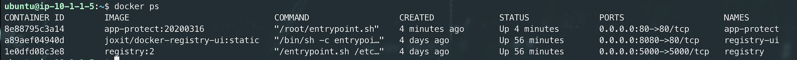
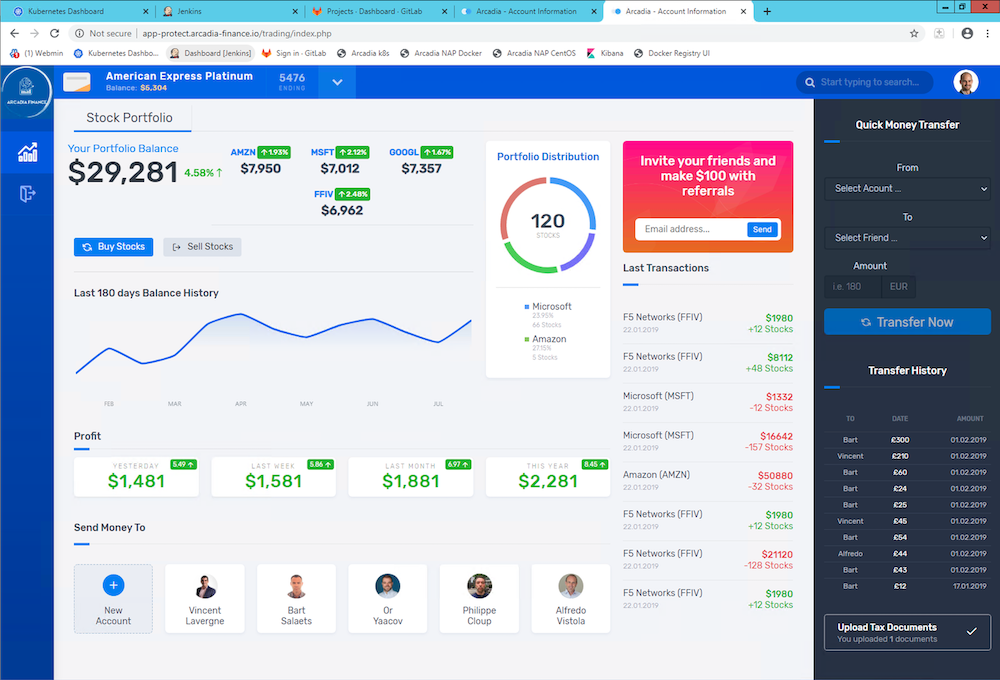

Step 7 - Customize the WAF policy¶
So far, we have been using the default NGINX App Protect policy. As you notices in the previous lab (Step 5), the nginx.conf does not file any reference to a WAF policy. It uses the default WAF policy.
In this lab, we will customize the policy and push a new config file to the docker container.
Steps:
SSH to the Docker App Protect + Docker repo VM
In the
/home/ubuntudirectory, create a new folderpolicy-advmkdir policy-advCreate a new policy file named
policy_base.jsonand paste the content belowvi ./policy-adv/policy_base.json{ "name": "policy_name", "template": { "name": "POLICY_TEMPLATE_NGINX_BASE" }, "applicationLanguage": "utf-8", "enforcementMode": "blocking" }Create another policy file named
policy_mongo_linux_JSON.jsonand paste the content belowvi ./policy-adv/policy_mongo_linux_JSON.json{ "policy":{ "name":"evasions_enabled", "template":{ "name":"POLICY_TEMPLATE_NGINX_BASE" }, "applicationLanguage":"utf-8", "enforcementMode":"blocking", "blocking-settings":{ "violations":[ { "name":"VIOL_JSON_FORMAT", "alarm":true, "block":true }, { "name":"VIOL_EVASION", "alarm":true, "block":true }, { "name": "VIOL_ATTACK_SIGNATURE", "alarm": true, "block": true } ], "evasions":[ { "description":"Bad unescape", "enabled":true, "learn":false }, { "description":"Directory traversals", "enabled":true, "learn":false }, { "description":"Bare byte decoding", "enabled":true, "learn":false }, { "description":"Apache whitespace", "enabled":true, "learn":false }, { "description":"Multiple decoding", "enabled":true, "learn":false, "maxDecodingPasses":2 }, { "description":"IIS Unicode codepoints", "enabled":true, "learn":false }, { "description":"IIS backslashes", "enabled":true, "learn":false }, { "description":"%u decoding", "enabled":true, "learn":false } ] }, "json-profiles":[ { "defenseAttributes":{ "maximumTotalLengthOfJSONData":"any", "maximumArrayLength":"any", "maximumStructureDepth":"any", "maximumValueLength":"any", "tolerateJSONParsingWarnings":true }, "name":"Default", "handleJsonValuesAsParameters":false, "validationFiles":[ ], "description":"Default JSON Profile" } ], "signature-settings": { "signatureStaging": false, "placeSignaturesInStaging": false, "attackSignatureFalsePositiveMode": "disabled", "minimumAccuracyForAutoAddedSignatures": "low" }, "server-technologies": [ { "serverTechnologyName": "MongoDB" }, { "serverTechnologyName": "Unix/Linux" }, { "serverTechnologyName": "PHP" } ] } }Note
you can notice the difference between the
baseand theadvancedpolicy.Now, create a new
nginx.confin thepolicy-advfolder. Do not overwrite the existing/etc/nginx/nginx.conffile, we need it for the next labs.vi ./policy-adv/nginx.confuser nginx; worker_processes 1; load_module modules/ngx_http_app_protect_module.so; error_log /var/log/nginx/error.log debug; events { worker_connections 1024; } http { include /etc/nginx/mime.types; default_type application/octet-stream; sendfile on; keepalive_timeout 65; server { listen 80; server_name localhost; proxy_http_version 1.1; app_protect_enable on; app_protect_security_log_enable on; app_protect_security_log "/etc/nginx/log-default.json" syslog:server=10.1.20.6:5144; location / { resolver 10.1.1.9; resolver_timeout 5s; client_max_body_size 0; default_type text/html; app_protect_policy_file "/etc/nginx/policy/policy_base.json"; proxy_pass http://k8s.arcadia-finance.io:30274$request_uri; } location /files { resolver 10.1.1.9; resolver_timeout 5s; client_max_body_size 0; default_type text/html; app_protect_policy_file "/etc/nginx/policy/policy_mongo_linux_JSON.json"; proxy_pass http://k8s.arcadia-finance.io:30274$request_uri; } location /api { resolver 10.1.1.9; resolver_timeout 5s; client_max_body_size 0; default_type text/html; app_protect_policy_file "/etc/nginx/policy/policy_mongo_linux_JSON.json"; proxy_pass http://k8s.arcadia-finance.io:30274$request_uri; } location /app3 { resolver 10.1.1.9; resolver_timeout 5s; client_max_body_size 0; default_type text/html; app_protect_policy_file "/etc/nginx/policy/policy_mongo_linux_JSON.json"; proxy_pass http://k8s.arcadia-finance.io:30274$request_uri; } } }Last step is to run a new container (and delete the previous one) referring to these 3 files.
docker rm -f app-protect docker run -dit --name app-protect -p 80:80 -v /home/ubuntu/policy-adv/nginx.conf:/etc/nginx/nginx.conf -v /home/ubuntu/policy-adv/policy_base.json:/etc/nginx/policy/policy_base.json -v /home/ubuntu/policy-adv/policy_mongo_linux_JSON.json:/etc/nginx/policy/policy_mongo_linux_JSON.json app-protect:20200316Check that the
app-protect:20200316container is runningdocker psRDP to the Jumhost as
user:userand click on bookmarkArcadia NAP Docker
Note
From this point on, NAP is using a different WAF policy based on the requested URI:
- policy_base for
/(the main app) - policy_mongo_linux_JSON for
/files(the back end) - policy_mongo_linux_JSON for
/api(the Money Transfer service) - policy_mongo_linux_JSON for
/app3(the Refer Friend service)
Video of this module (force HD 1080p in the video settings)